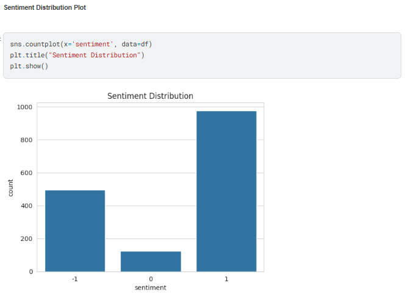
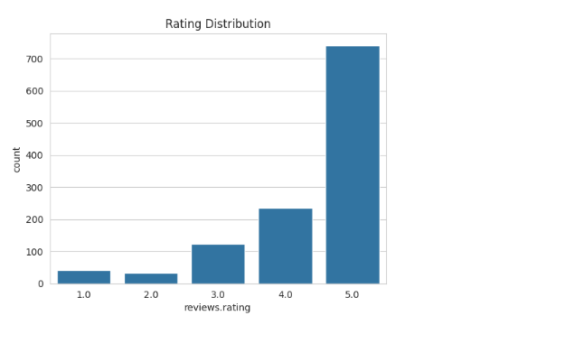
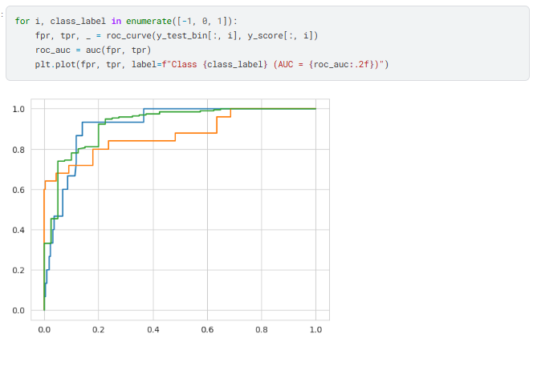

Machine Learning & NLP Project by Nityanand Khule
This project focuses on analyzing Amazon product reviews using Natural Language Processing (NLP) techniques to classify customer sentiments as Positive, Negative, or Neutral. The goal is to extract actionable insights from textual review data and build a predictive sentiment classification model.
E-commerce platforms receive millions of customer reviews daily. Manually analyzing feedback is inefficient and time-consuming. This project aims to automate sentiment detection using machine learning models to help businesses understand customer satisfaction and improve products.
Below are snapshots of model performance and analysis visuals:


